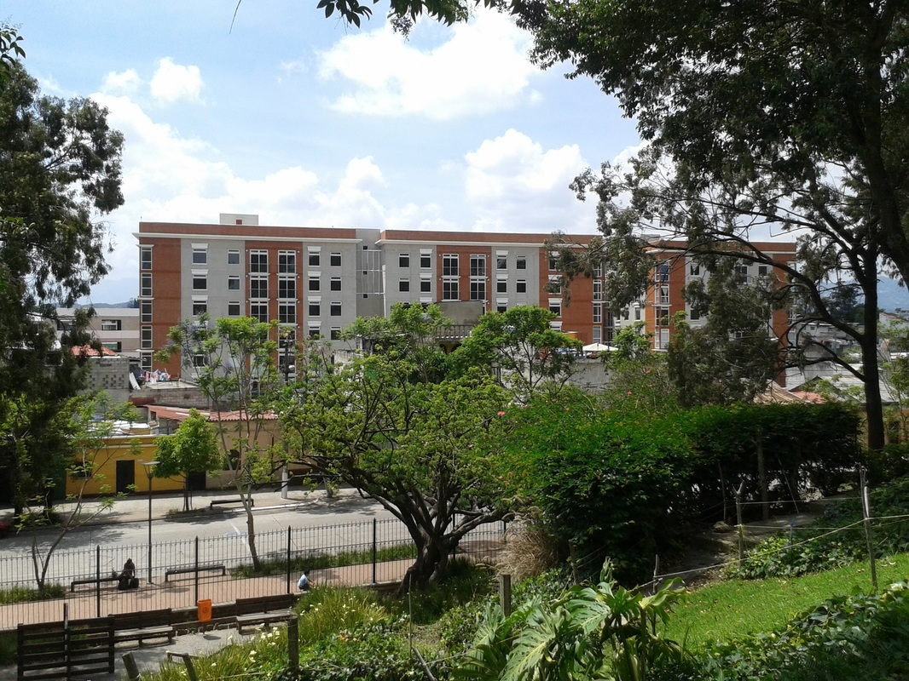

La arquitectura y el urbanismo desempeñan un papel fundamental en la comprensión y transformación de las ciudades y los territorios. Los procesos de crecimiento urbano, incremento de la densidad poblacional, transformación del uso del suelo y desarrollo de nuevas edificaciones generan dinámicas que inciden directamente en la calidad de vida de la población y en la configuración de los espacios habitables.
Dentro de estas dinámicas, la gentrificación constituye un fenómeno urbano de creciente importancia, debido a las transformaciones sociales, económicas, culturales y espaciales que puede generar en determinados sectores de las ciudades. Asimismo, el análisis de la densidad poblacional y urbana permite comprender la relación entre el crecimiento de la población, la ocupación del territorio, la infraestructura y la planificación de los espacios urbanos.
En este contexto, se propone la realización del Simposio Académico “Gentrificación y Densidad Poblacional”, como un espacio de análisis, reflexión y aprendizaje dirigido a estudiantes y docentes de la Facultad de Arquitectura de la Universidad Mariano Gálvez de Guatemala, Campus Cobán, Alta Verapaz.
El evento contará con la participación de profesionales invitados, quienes abordarán la temática desde diferentes perspectivas, permitiendo a los participantes conocer experiencias, criterios y enfoques relacionados con la transformación de las ciudades, la densidad urbana y poblacional, así como los desafíos que estos fenómenos pueden generar en el ámbito local y global.
La actividad busca fortalecer la formación académica de los estudiantes, promoviendo el pensamiento crítico, el análisis de problemáticas urbanas contemporáneas y la discusión de posibles alternativas relacionadas con la planificación y el desarrollo sostenible de las ciudades.